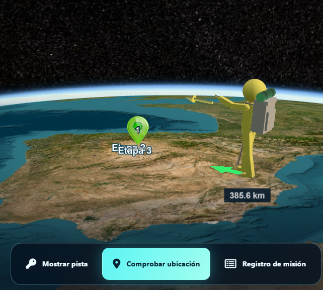
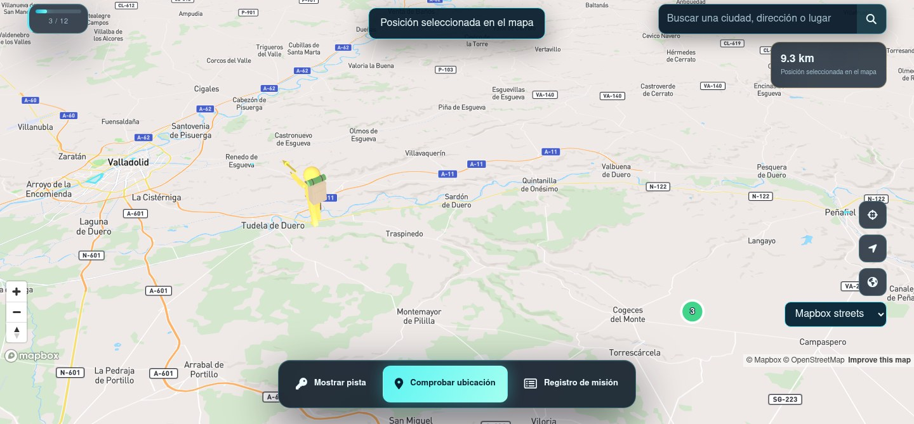
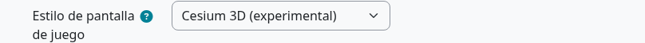

For a more modern and spectacular experience, Treasure Hunt offers two experimental 3D viewers: Cessium, an interactive globe, and Mapbox, an alternative 3D map. Both animate Pegman and use the same hunt clues and progress.
Three browser viewers
| Viewer | Best fit | What to expect |
|---|---|---|
| Bootstrap / OpenLayers | Everyday play | Standard map, familiar controls, clues, QR and stage feedback. |
| Cessium / Cesium 3D Experimental | Immersive exploration | Globe, terrain and 3D Pegman with animated states; native layer controls. |
| Mapbox Experimental | Alternative 3D map | Mapbox styling and buildings when configured with an access token. |
Cessium: a globe for the quest
The Cessium viewer presents the hunt in a three-dimensional world. It can show terrain and imagery choices, fly toward the play area and animate Pegman as the player marks a location or follows directional guidance. The hunt’s rules, clues and progress still come from the same Moodle activity.


Mapbox as an alternative
Mapbox is an optional experimental viewer with its own map style and 3D buildings where available. The Moodle administrator must configure a Mapbox access token for hosted styles and imagery. Preview it with the same road and compare performance on the devices students will use.

Choose and test
The activity setting chooses the normal viewer. A teacher with management permission can select a viewer for a test using playertype=bootstrap, playertype=cessium or playertype=mapbox in the play URL. Use the activity’s preview controls for a valid road. Check that every viewer displays the same eligible clues, completed-stage history and QR flow.

Geographic editor
The standard stage editor uses OpenLayers. The experimental edit2.php can use the map engine selected in activity settings, or a teacher-selected playertype URL parameter, while retaining the surrounding Moodle editor layout. OpenData authoring is described for the standard editor.